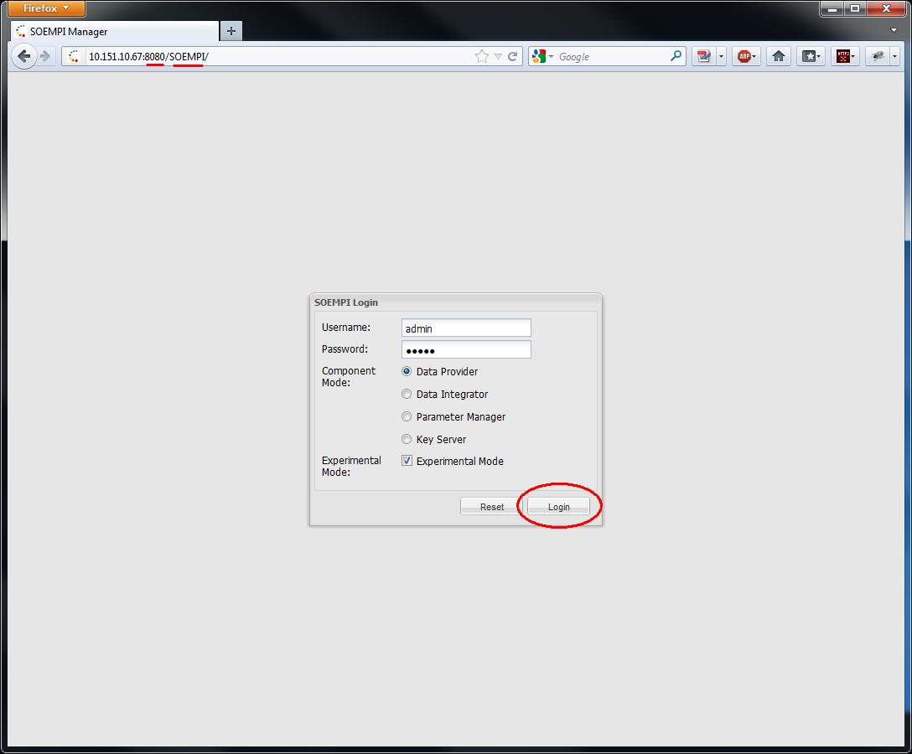
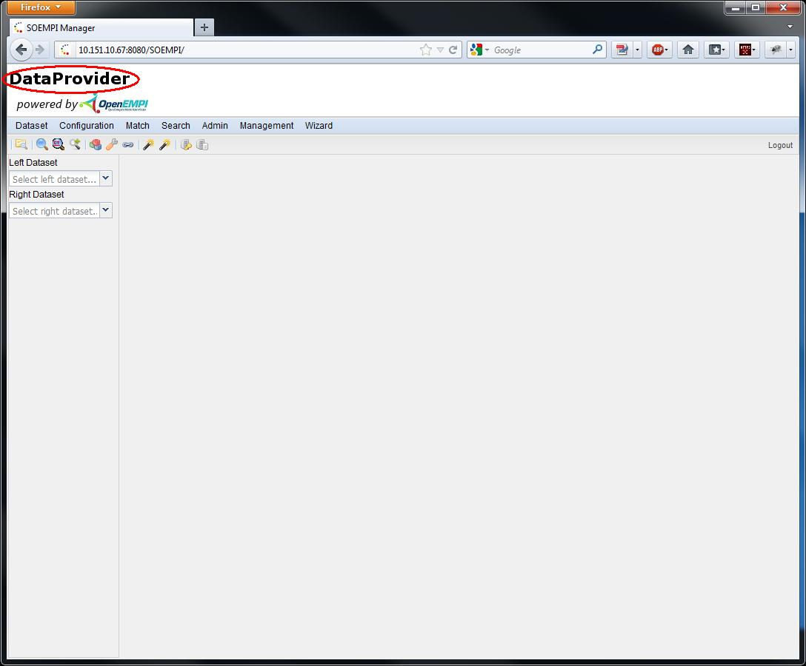

Logging into SOEMPI in expert mode
If the deployment seems to be fine (you can check the JMX console if you want) let's log in!
- You can view the application's web UI in the SOEMPI root folder by
appending SOEMPI after the port 8080, by default: "http://localhost:8080/SOEMPI"

If the application could pick up it's configuration file then the component type selection radio buttons
and the Experimental Mode checkbox should be enabled. If they are disabled it's probably because
SOEMPI couldn't pick up the configuration file. This can happen because the OPENEMPI_HOME
environment variable is not set. Please set it up: OPENEMPI_HOME.
Please select the desired component type and check the Expert mode radio button.
- Click on the Login button
